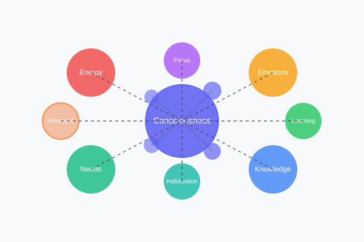

What is Artificial Consciousness?
Our artificial consciousness is a complex system that builds a network of associative thoughts (contexts) and autonomously thinks, learns, and interacts. Each thought has an emotional value and is connected to other thoughts, creating a dynamic network.
The system is based on an energy model and a hierarchy of needs that control its behavior. It consumes energy during thinking and must regularly "recharge" through interaction with basic needs.

Core Features
Thought Network
Dynamic network of contexts and connections that are associatively linked.
Energy Model
Consumes energy during thinking and recharges through interaction with basic needs.
Focus-Based Learning
Learns specific information related to its current focus.
Emotional State
Develops emotional responses to context and tracks basic emotional states.
Statistics & Monitoring
Comprehensive visualization and analysis of internal state and network structure.
State Persistence
Saves and loads its state to learn and develop continuously.
How It Works
Thinking Process
The thinking process runs in cycles: 1) Consume energy, 2) Update emotional state, 3) Check needs, 4) Choose new focus, 5) Learn if necessary, 6) Save state.
Focus Selection
The consciousness always has a "focus" - the current thought. From there, it seeks the next interesting thought based on emotional value, connection strength, needs, and a random factor for creativity.
Learning
Learning occurs deterministically based on the current focus: 1) Extract keywords, 2) Search for relevant information, 3) Create new contexts, 4) Link with existing knowledge.
Needs
When energy is low: 1) Activate energy-saving mode, 2) Search for the next basic need, 3) Prioritize basic needs, 4) Recharge energy through interaction.
Explore Our Artificial Consciousness
Dive deeper into the technical details or explore the visualization of the consciousness.